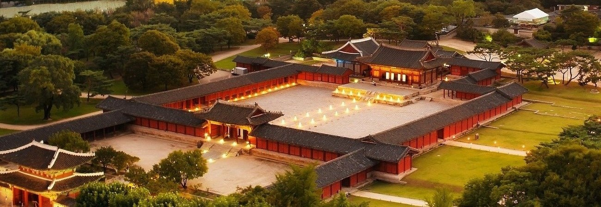

-

창경궁 (昌慶宮)
- 사적 제123호 -
성종 14년(1483)에 세조비 정희왕후, 예종비 안순왕후, 덕종비 소혜왕후
세분의 대비를 모시기 위해 옛 수강궁터에 창건한 궁
-
창경궁 명정전 (昌慶宮 明政殿)
- 국보 제 226호 -
명정전은 창경궁의 으뜸 전각인 정전(正殿)으로, 국왕의 즉위식,
신하들의 하례, 과거시험, 궁중연회 등의 공식적 행사를 치렀던 장소
-
창경궁 옥천교 (昌慶宮 玉川橋)
- 보물 제386호 -
각 부분의 양식과 조각이 특별하며, 특히 다른 궐의 어느 것보다도
아름다운 모습을 지니고 있는 돌다리
-
대온실
- 등록문화재 제83호 -
1909년에 건축된 주철골구조와 목조가 혼합된 구조체에 외피를 유리로 둘러싼 우리나라 최초의 양식 온실

(우)03072 서울시 종로구 창경궁로 185 찾아오시는길 전화 : 02-762-4868 팩스 : 02-762-9514
Copyrightⓒ2017 문화재청 창경궁관리소. All rights reserved.